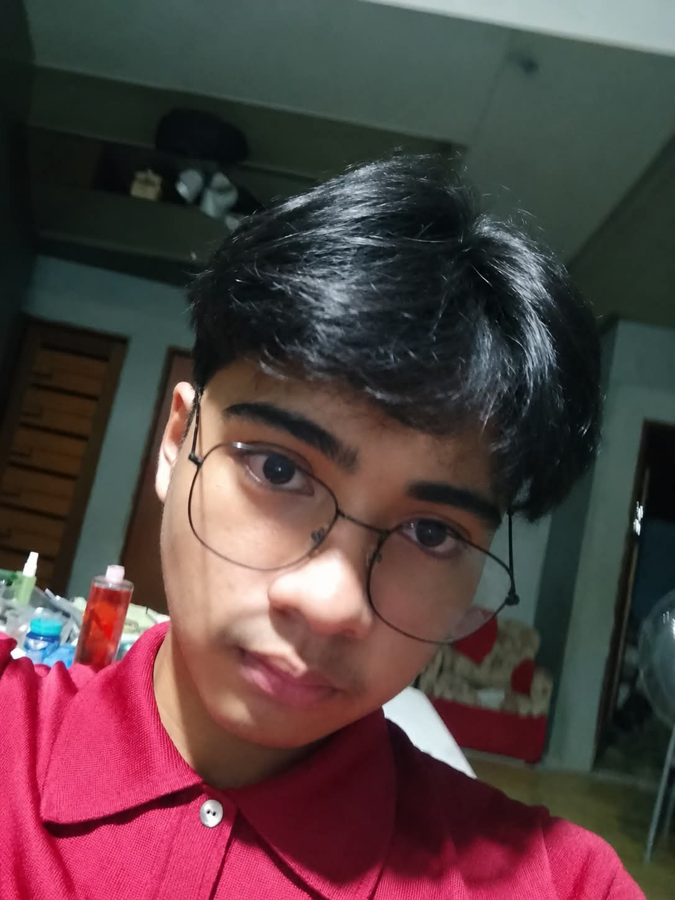
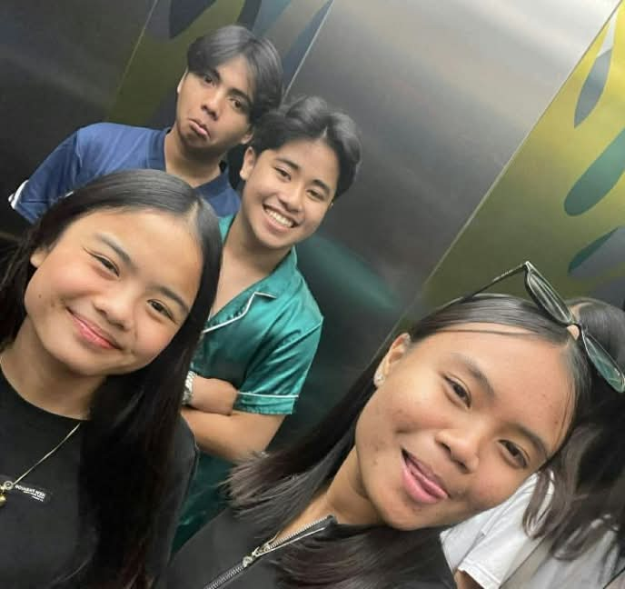
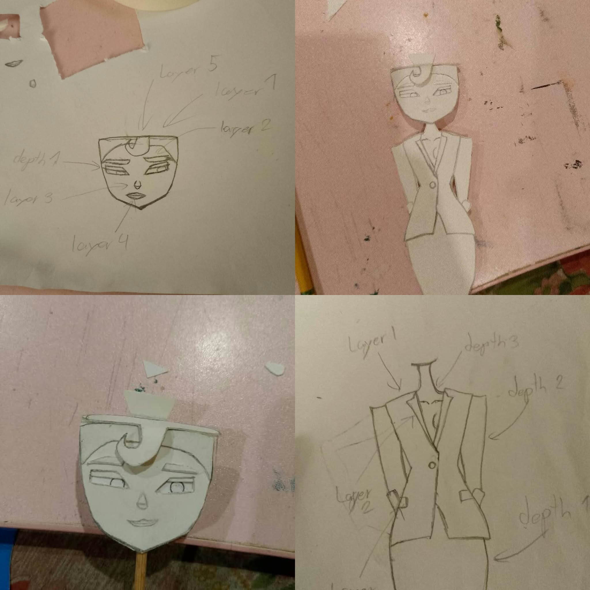
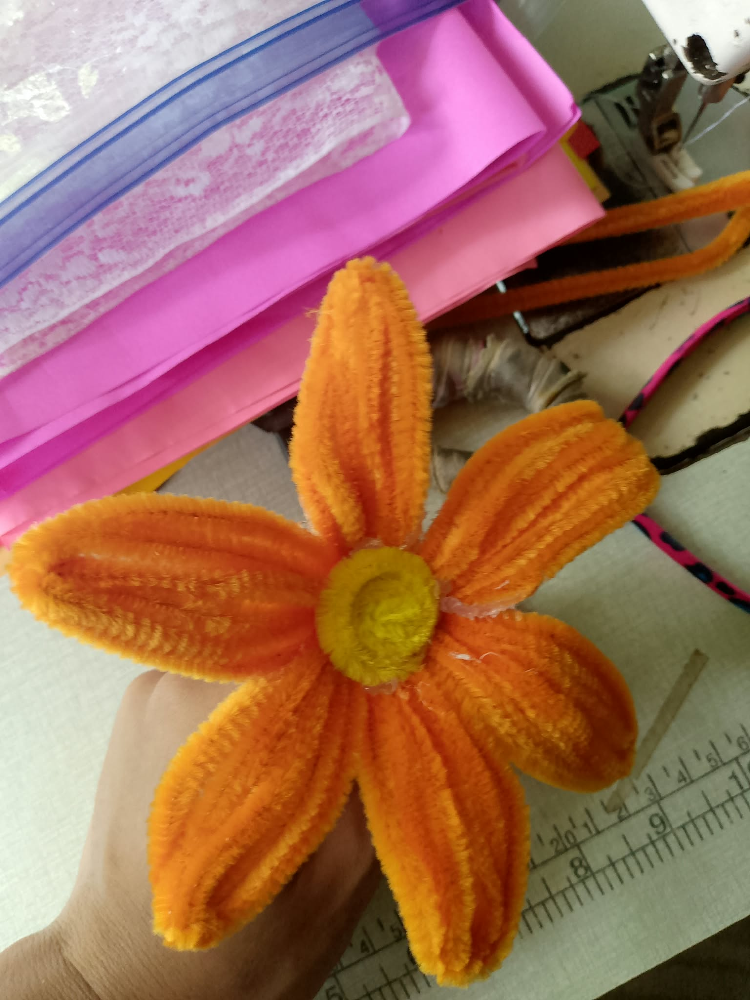

Who I am
Name: Xander B. Advincula
Grade & Section: Grade 11 — ICT-A
School: Vedasto R. Santiago
Address: Salacot, San Miguel, Bulacan
Special Someone: Darian Jane L. Madrid
Birthday: May 06, 2010
Age: 16 Years old
Fav Artist: Radiohead/Mac DeMarco
I'm an ICT student interested in technology, creative digital work (slight) and learning by actually making things. This portfolio documents who I am, what I can do, and the path I'm preparing to take.

Hello my name is Xander and I am a normal student. Nothing special but im trying my best everyday so i could have a great future. For now i am a ICT student or an Information and Communications Technology student. I like coding although its a pain when trying to find an error i still like coding because in coding ur not just putting codes to work something out. You're also solving problems, learning from your mistakes, and finding different ways to turn an idea into something real. Sometimes, one small mistake can stop the whole program from working, but figuring out where the problem is and finally fixing it feels rewarding. That's one of the reasons why I want to continue improving my skills in ICT.
Name: Xander B. Advincula
Grade & Section: Grade 11 — ICT-A
School: Vedasto R. Santiago
Address: Salacot, San Miguel, Bulacan
Special Someone: Darian Jane L. Madrid
Birthday: May 06, 2010
Age: 16 Years old
Fav Artist: Radiohead/Mac DeMarco
My interests are coding and making websites. In the future, I might become a Game Developer because I want to create a game that people would find fun, cool, and challenging. A Web Developer also sounds interesting, but I think becoming an IT Support Specialist would suit me better because I like working with computers and solving problems. Aside from technology, I'm also interested in musical instruments. I have my own piano at home, and I'm currently learning how to play it. We also have other instruments, like a violin that my little sister used to play, and a guitar and ukulele that my brother plays. I started learning piano because pressing the keys and hearing the notes helps me feel calm. It's something I enjoy doing when I want to relax.
These are some of the soft skills I have developed through school activities, projects, and working with other people.



It fits my future because I have some interest in making things and figuring things out. I could draw, model, build things, and more that I cannot explain, but those things fit my future not only because I am interested in them, but also because I want to keep improving. Being an ICT student gives me a chance to use these skills in different projects. I can use creativity, problem-solving (not sure) and technology together to make something useful. I know I am still learning, but I want to keep building these skills because I know they can help me in college and in the future.